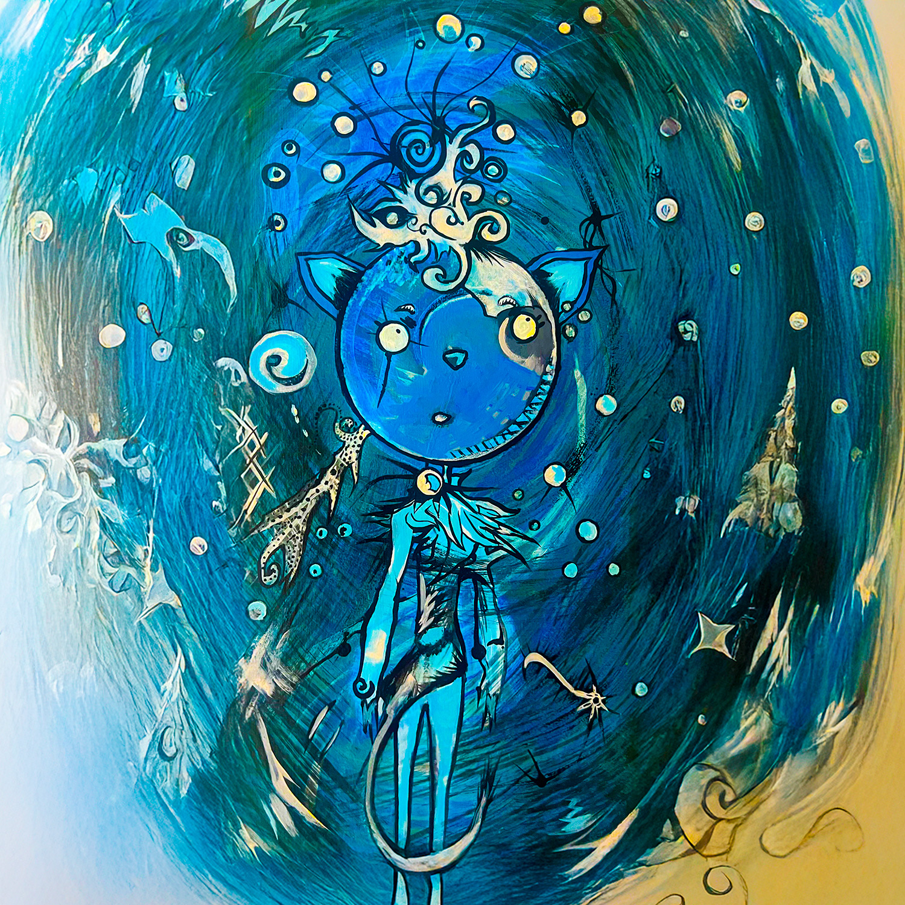
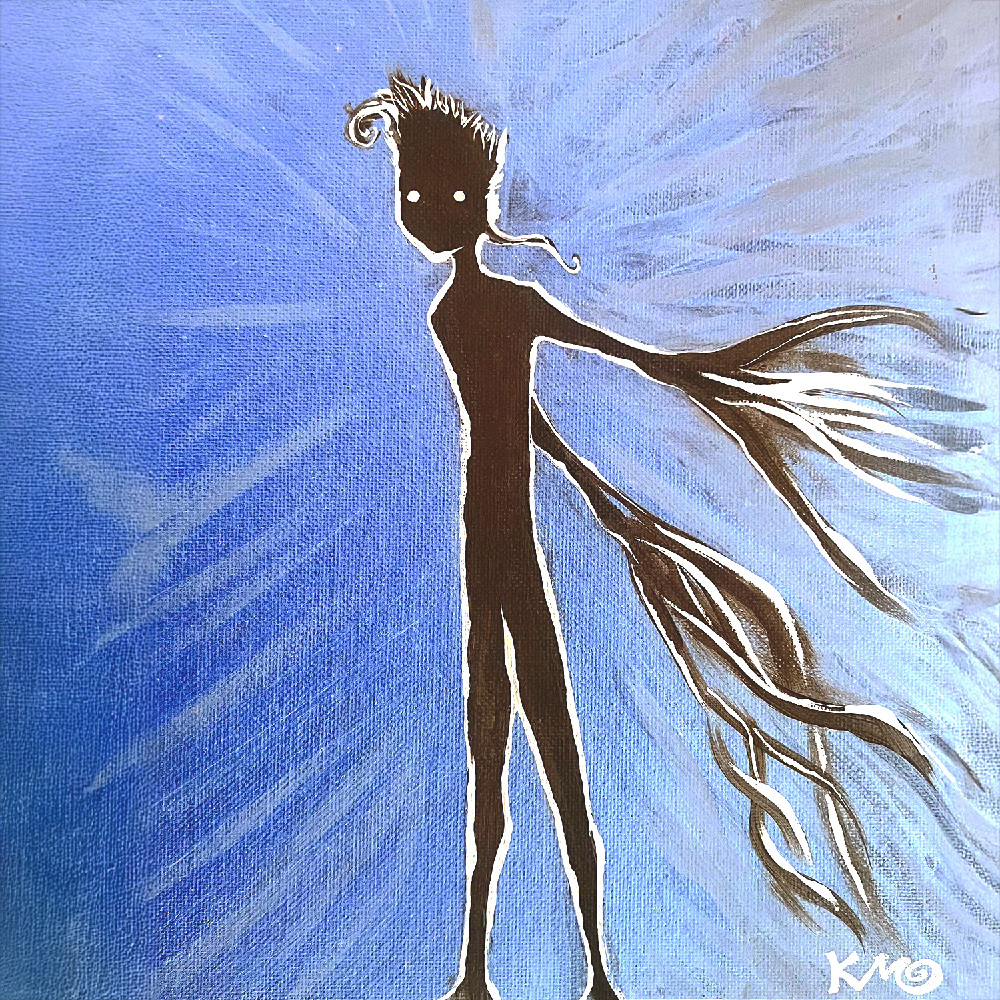
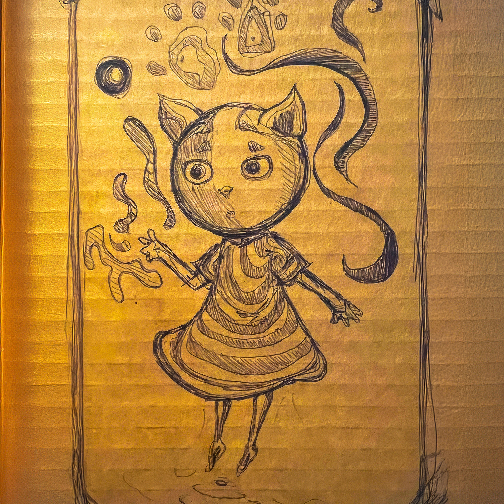
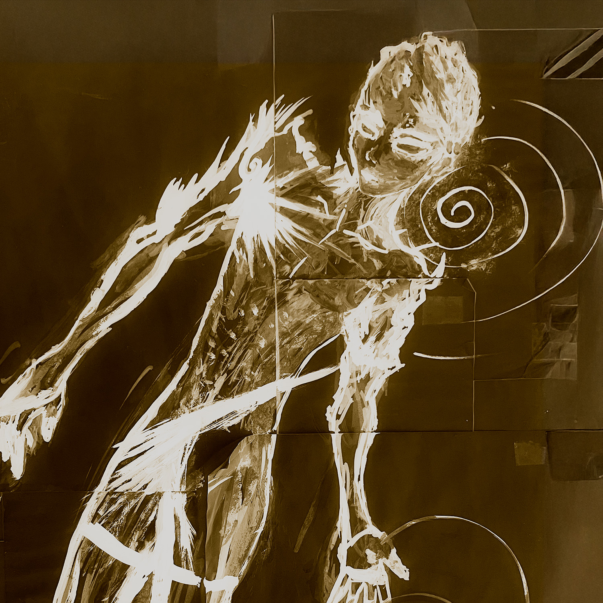
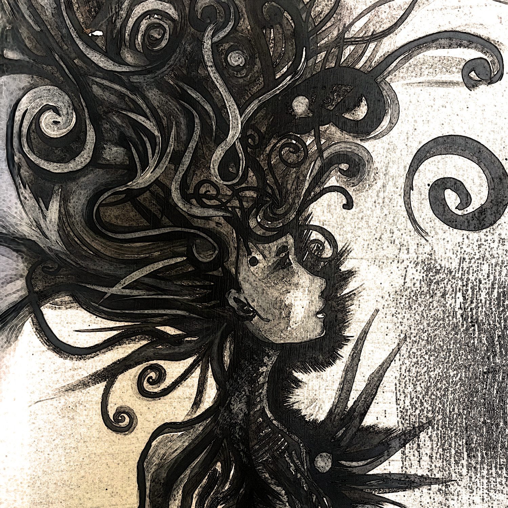
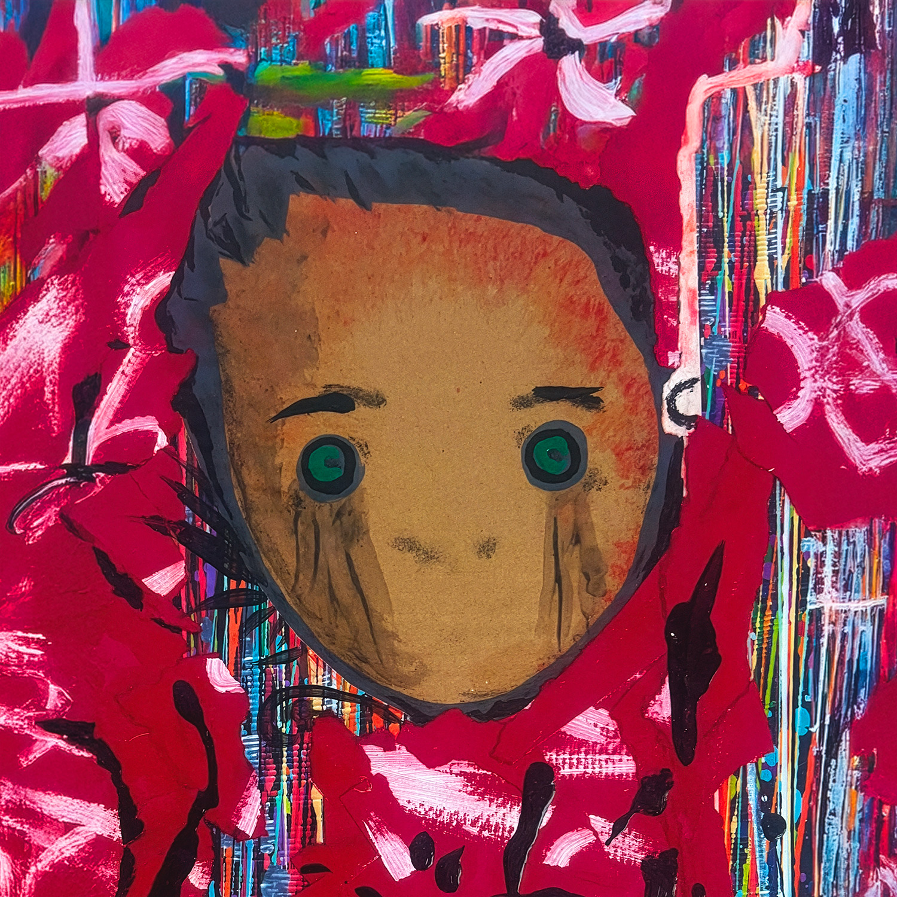

Enter the Island
The Island
The island of your mind
A wish you long to find,
A place where you can hide,
The mirror of your eyes.
Beneath a stranger sky,
That feeling never dies,
In the island of your mind.
Art





